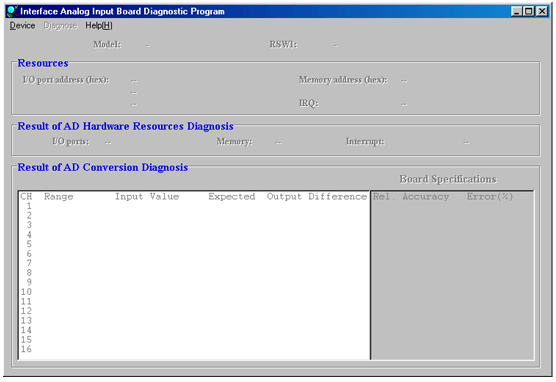
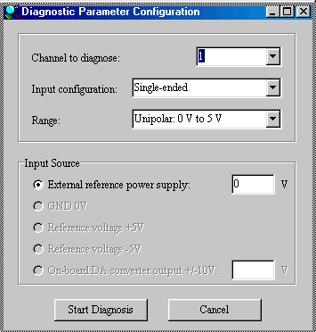
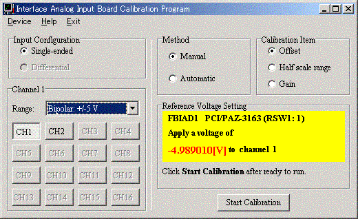
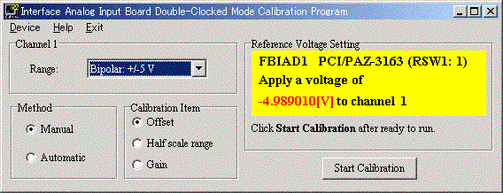
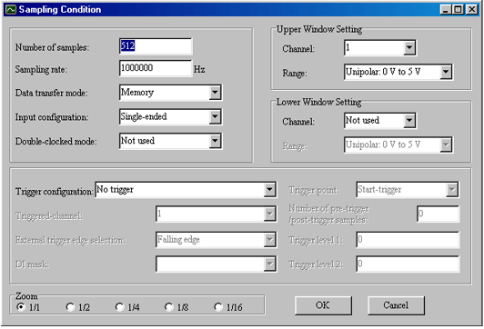
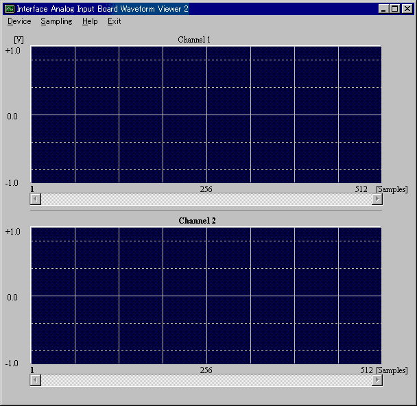
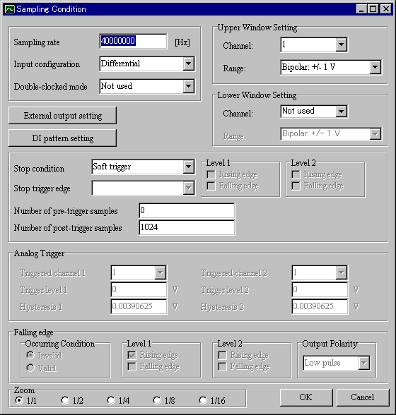
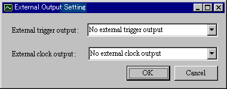
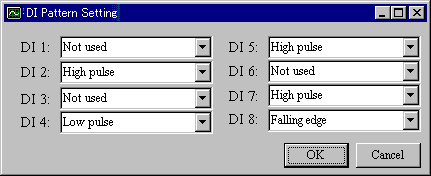

12. Utilities
For optional products (terminal block, cable, and so on), please refer to the user's manual.
This program can determine if a malfunction is located in the software or in the hardware. If the problem is located in the software, this program can diagnose the problem in detail.
12.1.1 Required Items for the Diagnostic Program
- Interface analog input board
- Interface analog input board diagnostic program
- Terminal block which is appropriate for the board
- Reference power supply
Use a power supply with an accuracy of at least 5 significant digits.- Cables
Use a shielded cable of length less than or equal to 50 cm (19.69 in.).
12.1.2 Starting the Diagnostic Program
1. Click the Start button, point to Programs, point to Interface GPF-3100, and then click Diagnostic Program. 2. The Interface Analog Input Board Diagnostic Program main window will appear.

3. Click Open New Device on the Device menu. Then the list of available analog input boards will be displayed on the screen. Select a device that you want to diagnose. Then, click OK. 4. The board type, I/O address, and IRQ will be displayed on the main window.
The following table shows available menu items and commands.
Menu Command Description Device Open New Device Selects the device to diagnose. Save Saves the results of the diagnosis. Exit Closes the program.
Diagnose Hardware Resource
Checks the PCI configuration.
AD Conversion Measures the accuracy of the analog to digital conversion.
Help Version Information
Displays the version information.
Note:
- This program cannot open multiple devices simultaneously.
- To use multiple devices of the same type simultaneously, set the different RSW1
values to every device.
- This program is not available in the CSI/CBI-320110, CBI-320110TK,
CBI-320110TL, LPC-320910, PEX-320910, and CTP/CPZ-360810
12.1.3 Checking the PCI Configuration
1. To check the PCI configuration registers, click Hardware Resource on the Diagnose menu. 2. The input/output access and interrupt circuit will be tested. Then, the result will be displayed in the Results of AD Hardware Resources Diagnosis group box. 3. Save NG results as a file, and forward them to us by e-mail. * Items diagnosed by this program are differs depending on the device.
12.1.4 Checking the AD Conversion
1. To measure the accuracy of the analog to digital conversion, click AD conversion on the Diagnose menu. 2. The Diagnostic Parameter Configuration dialog box will appear. 
3. Provide all parameters in the Diagnostic Parameter Configuration dialog box, and then click the Start Diagnosis button.
The following table shows the diagnosis parameters.
Parameter Description Channel to diagnose Select the channel number to diagnose. Input configuration Select the input configuration to configuration. Range Select the range. Input Source Select the input source used to apply voltage to the channel. External reference power supply Specifies an external reference power supply will be connected to the channel. Enter the voltage in the text box.*1 GND 0 V Applies 0 V to the channel.*2 Reference voltage +5V Applies on-board REF(+5V) to the channel.*2 Reference voltage -5V Applies on-board REF(-5V) to the channel.*2 On-board DA converter output +/-10 V Applies on-board DA converter output voltage to the channel. Enter the voltage in the text box.*2 Notes: *1 You need to provide a power supply. Connect it to the channel properly. *2 You don not need to provide external power supplies or connections because the board supplies these voltages and the connections are completed internally. These parameters are inactive if the board does not support them. 4. The results of the diagnosis will appear in the Results of AD Conversion Diagnosis group box. 5. If the AD conversion results is outside of the expected range, confirm that all cables are connected correctly. 6. If the problem continues to persist even after you check that all cables are correctly connected, and then click Save on the Device menu. Please send the diagnostic result to us by e-mail. Note: The diagnostic results in the above figure are examples.
We ship the board after being fully calibrated at 25 °C (77 °F).
- Ambient temperature changes
- Input configuration changes
- To optimize measurement accuracy
If the channel wasn't successfully calibrated, correct conversion data cannot be obtained at the next acquisition.
12.2.1 Required Items for the Calibration Program
- Interface analog input board
- Interface analog input board calibration program
- Terminal block which is appropriate for the board
- Reference power supply
Use a power supply with an accuracy of at least five significant digits.- Cables
Use a shielded cable of length less than or equal to 50 cm. (19.69 in.)
12.2.2 Starting the Calibration Program
This calibration program is unnecessary for the following products. 1. Click the Start button, point to Programs, point to Interface GPF-3100, and then click Calibration Program. 2. The Interface Analog Input Board Calibration Program main window will appear. 
The following table shows available menu items and commands.
Menu Command Description Device Open New Device Opens the device to be calibrated. Close the Device Closes the device. Help Version Information
Displays the version information.
Exit -
Closes the program.
3. Click Open New Device on the Device menu. Then the list of available analog input boards will be displayed on the screen. Select a device that you want to calibrate. This program can open only one device at a time.
1. Provide parameters shown in the following table in the Interface Analog Input Board Calibration Program main window.
Parameter Description Input Configuration Select the input configuration. Channel Select the channel. Range Select the range. Method Toggle between manual and automatic operation. Calibration Item Select the parameter to calibrate. 2. Follow the instructions shown in the Reference Voltage Setting group box. After starting calibration, a dialog box containing a color-coded calibration indicator will be displayed on the screen. For manual calibration, use up and down arrows adjacent to colored indicator to calibrate the parameter. After the calibration is successfully completed, click OK to write the new settings to the board. If you want to abort the calibration, click Cancel to prevent the new settings from being written to the board. However, the new settings will be retained in memory, and will remain valid until the computer is turned off. 3. The basic flow of calibration is as follows: a. Select a channel to calibrate. b. Select the input configuration of the channel. c. Select an input range of the channel. d. Select the method of calibration. e. Select the parameter to be calibrated.
Model
Calibration Order
PCI-3126, PCI-3133, PCI-3153, PCI-3161, PCI-3163, PCI-3166, PCI-3168C, PCI-3177C, PCI-3178, PCI-320112, PCI-3521, PCI-3525, PCI-320412, PCI-320416, PCI-360116, PCI-360112, PCI-360216
LPC-320724, LPC-321012, LPC-321116, LPC-321216, LPC-361116, LPC-361216
PEX-320724, PEX-321012, PEX-321116, PEX-321216, PEX-361116, PEX-361216
PCI-361812, PCI-321516
CTP/CPZ-3126, CTP/CPZ-3133, CTP/CPZ-3165(for unipolar), CTP/CPZ-3167(for unipolar), CTP/CPZ-3168, CTP/CPZ-3175(for unipolar), CTP/CPZ-3177, CTP/CPZ-3178, CTP/CPZ-3182(for unipolar), CTP/CPZ-3183, CTP/CPZ-3521, CTP/CPZ-320412, CTP/CPZ-320416, CTP/CPZ-3525, CTP/CPZ-360116, CTP/CPZ-360112, CTP/CPZ-360810
CSI/CBI-320412, CBI-320412TR, CBI-320412TK, CBI-320412TL, CSI/CBI-320416, CBI-320416TR, CBI-320416TK, CBI-320416TL, CSI/CBI-360112, CBI-360112TR, CBI-360112TK, CBI-360112TL, CSI/CBI-360116, CBI-360116TR, CBI-360116TK, CBI-360116TL1st: Offset
2nd: Gain
3rd: Half scale rangePCI-3135, PCI-3155, PCI-3165, PCI-3174, PCI-3175, PCI-3176
LPC-321316, LPC-321416, LPC-361316, LPC-361416
PEX-321316, PEX-321416, PEX-361316, PEX-361416
CTP/CPZ-3135, CTP/CPZ-3165(for bipolar), CTP/CPZ-3167(for bipolar), CTP/CPZ-3174, CTP/CPZ-3175(for bipolar), CTP/CPZ-3182(for bipolar)
CBI-3133A, CBI-3133B, CBI-3134A, CBI-3134B,
CSI/CBI-320212, CBI-320212TR, CBI-320212TK, CBI-320212TL, CSI/CBI-320312, CBI-320312TR, CBI-320312TK, CBI-320312TL1st: Half scale range
2nd: Gain
3rd: OffsetPCI-3120, PCI-3170A, PCI-3171A, PCI-3172A, PCI-3173A, PCI-3180, PCI-3522A, PCI-3523A
LPC-320910
PEX-320910
CTP/CPZ-3120A, CTP/CPZ-3120B, CTP/CPZ-3120C, CTP/CPZ-3170, CTP/CPZ-3171, CTP/CPZ-3172, CTP/CPZ-3173, CTP/CPZ-3180A, CTP/CPZ-3180B, CTP/CPZ-3180C, CTP/CPZ-3522, CTP/CPZ-3523
CSI/CBI-320110,CBI-320110TK,CBI-320110TLNot applicable f. Follow the instructions shown in the Reference Voltage Setting group box. The following models load the calibration value that is written in EEPROM when click Cancel.
PCI-320112, PCI-320412, PCI-320416, PCI-360116, PCI-360112, PCI-360216
LPC-320724, LPC-321012, LPC-321116, LPC-321216, LPC-321316, LPC-321416, LPC-361116, LPC-361216, LPC-361316, LPC-361416
PEX-320724, PEX-321012, PEX-321116, PEX-321216, PEX-321316, PEX-321416, PEX-361116, PEX-361216, PEX-361316, PEX-361416
PCI-361812, PCI-321516
CTP/CPZ-3183, CTP/CPZ-320412, CTP/CPZ-320416, CTP/CPZ-360116, CTP/CPZ-360810
CBI-3133A, CBI-3133B, CBI-3134A, CBI-3134B,
CSI/CBI-320212, CBI-320212TR, CBI-320212TK, CBI-320212TL,
CSI/CBI-320312, CBI-320312TR, CBI-320312TK, CBI-320312TL,
CSI/CBI-320412, CBI-320412TR, CBI-320412TK, CBI-320412TL,
CSI/CBI-320416, CBI-320416TR, CBI-320416TK, CBI-320416TL,
CSI/CBI-360112, CBI-360112TR, CBI-360112TK, CBI-360112TL,
CSI/CBI-360116, CBI-360116TR, CBI-360116TK, CBI-360116TL
Some models do not support RevisionID, so please confirm the corresponding model of the AdReadAdjustVR function.g. Calibrate the parameter. 4. After one parameter is calibrated, calibrate the remaining ones in the order shown in the above table.
12.3 Double-Clocked Mode Calibration Program
It is sometimes necessary to calibrate the AD converter to ensure accuracy. This program is provided to calibrate the conversion accuracy of two AD converters when using the double-clocked mode.
12.3.1 Required Items for the Double-Clocked Mode Calibration Program
- Interface analog input board
- Interface analog input board double-clocked mode calibration program
- Terminal block which is appropriate for the board
- Reference power supply
Use a power supply with an accuracy of at least five significant digits.- Cables
Use a shielded cable of length less than or equal to 50 cm. (19.69 in.)
12.3.2 Starting the Double-Clocked Mode Calibration Program
1. Click the Start button, point to Programs, point to Interface GPF-3100, and then click Double-Clocked Mode Calibration Program. 2. The Interface Analog Input Board Double-Clocked Mode Calibration Program main window will appear. 
The following table shows available menu items and commands.
Menu Command Description Device Open New Device Opens the device to be calibrated. Close the Device Closes the device. Help Version Information
Displays the version information.
Exit -
Closes the program.
3. Click Open New Device on the Device menu. Then the list of available analog input boards will be displayed on the screen. Select a device that you want to calibrate. This program can open only one device at a time.
1. Provide parameters shown in the following table in the Interface Analog Input Board Double-Clocked Mode Calibration Program main window.
Parameter Description Range Select the range. Method Toggle between manual and automatic operation. Calibration Item Select the parameter to calibrate. 2. Follow the instructions shown in the Reference Voltage Setting group box. After starting calibration, a calibration indicator will be displayed on the screen. For manual calibration, use the spin control to calibrate the item selected. After the calibration is successfully completed, click OK. If you want to abort the calibration, click Cancel. 3. The basic flow of calibration is as follows: a. Select an input range for the channel. b. Select the method of calibration. c. Select the parameter to be calibrated. First, adjust Offset, and then Gain, and finally Half scale range. d. Follow the instructions shown in the Reference Voltage Setting group box. e. Calibrate the parameter. 4. After one parameter is calibrated, calibrate the others in the specified order. Notes:
- For the PCI-3161, use the Manual method to calibrate the Offset and Half scale range. The upper indicator shows the calibration status of channel 1, the lower indicator shows the calibration status of channel 2. Use the spin control of the upper indicator to calibrate both channel 1 and channel 2.
- The Calibration Program and Double-Clocked Mode Calibration Program may be unable to calibrate at one time. In this case, choose the Manual method and tune the volume carefully to become being the target value.
- Three calibration items have much effect on each other. If the second calibration item does not satisfy its tolerance, you need to calibrate the first calibration item again.
This program can display waveforms from a function generator or signal source on the screen. Up to two channels can be viewed simultaneously in this program. The sampling rate is the same for both channels.
12.4.1 Required Items for the Waveform Viewer
- Interface analog input board
- Interface analog input board waveform viewer
- Terminal block which is appropriate for the board
- Function generator or signal source
- Cables
Use a shielded cable of length less than or equal to 50 cm. (19.69 in.)
12.4.2 Starting the Waveform Viewer
1. Click the Start button, point to Programs, point to Interface GPF-3100, and then click Waveform Viewer. 2. The Interface Analog Input Board Waveform Viewer main window will appear. The following table shows available menu items and commands.
Menu Command Description Device Open New Device Opens the device to start the waveform viewer. Close the Device Closes the device. Save Saves the results of sampling. Sampling
Sampling Condition Configures sampling conditions. Start Starts sampling. Stop Stops sampling. Help Version Information
Displays the version information.
Exit -
Closes the program.
3. Click Open New Device on the Device menu. The list of available analog input boards will be displayed on the screen. Select the device that you want to use to view waveforms. This program can open only one device at a time. Note:. The maximum channel is two to sample simultaneously in this utility. The sampling frequency cannot be configured for every channel
The following table shows available menu items and commands.
|
1. Click Sampling Condition on the Sampling menu to configure the sampling conditions. 2. The Sampling Condition dialog box will appear. 
The following table shows available parameters.
Parameter Description Number of samples Select the number of samples to acquire from 512 through 524288. Sampling rate Specify sampling rate in Hz. Data transfer mode Select the data transfer mode.*3 Input configuration Select the input configuration.*3 Double-clocked mode Enable or disable the double-clocked mode.*3 Channel Select the channels to view.*3 Range Select the input range for the channel.*3 AC coupling Enable/disable the AC coupling. *4 Trigger configuration Select the trigger. Trigger-channel Select the trigger channel. External trigger edge selection Select falling or rising edge. DI mask Select the general purpose digital input pins to mask the external trigger. Trigger point Select the trigger point. Only "Start-trigger" is applicable to this version. Number of pre-trigger/post-trigger samples Specify the number of pre-trigger or post-trigger samples. For pre-trigger, give a negative value. For post-trigger, give a positive value. Trigger level 1, Trigger level 2 Specify the threshold for the analog trigger. Zoom Select the zoom factor. Notes: 3. Click OK if the settings are correct. 4. To start the sampling, click Start on the Sampling menu. 5. To stop the sampling, click Stop on the Sampling menu. 6. To save the acquired samples, click Save on the Device menu. Data can be saved in either binary or CSV format. 7. To close the device, click Close the Device on the Device menu. 8. To terminate this program, first close the device, and then click Exit.
This program can display waveforms from a function generator or signal source on the screen. Up to two channels can be viewed simultaneously in this program. The sampling rate is the same for both channels.
12.5.1 Required Items for the Waveform Viewer (Memory)
- Interface analog input card
- Interface analog input card waveform viewer
- Terminal block which is appropriate for the card
- Function generator or signal source
- Cables
Use a shielded cable of length less than or equal to 50 cm. (19.69 in.)
12.5.2 Starting the Waveform Viewer (Memory)
1. Click the Start button, point to Programs, point to Interface GPF-3100, and then click Waveform Viewer 2. 2. The Interface Analog Input Board Waveform Viewer 2 main window will appear. 
The following table shows available menu items and commands.
Menu Command Description Device Open New Device Opens the device to start the waveform viewer. Close the Device Closes the device. Save Saves the results of sampling. Sampling
Sampling Condition Configures sampling conditions. Start Starts sampling. Stop Stops sampling. Help Version Information
Displays the version information.
Exit -
Closes the program.
3. Click Open New Device on the Device menu. The list of available analog input boards will be displayed on the screen. Select the device that you want to use to view waveforms. This program can open only one device at a time. Note:. - The maximum channel is two to sample simultaneously in this utility. The sampling frequency cannot
be configured for every channel.
- This program is available in CSI/CBI-320110, CBI-320110TK, CBI-320110TL,
LPC-320910, PEX-320910 and CTP/CPZ-360810.
1. Click Sampling Condition on the Sampling menu to configure the sampling conditions. 2. The Sampling Condition dialog box will appear. 
The following table shows available parameters.
Parameter
Description
Sampling rate Specify sampling rate in Hz. Input configuration Select the input configuration. Double-clocked mode Enable or disable the double-clocked mode. Channel Select the channels to view. Range Select the input range for the channel. Stop condition Select the sampling stop condition. Level 1 Specify the polarity of analog trigger level 1. Level 2 Specify the polarity of analog trigger level 2. Stop trigger edge Select the edge polarity of external trigger stop condition. Number of pre-trigger samples Specify the number of pre-trigger samples. Number of post-trigger samples Specify the number of post-trigger samples. Analog Trigger Triggered-channel 1 Select the channel of analog trigger level 1. Trigger level 1 Specify the trigger level of analog trigger level 1. Hysteresis 1 Specify the hysteresis of analog trigger level 1. Triggered-channel 2 Select the channel of analog trigger level 2. Trigger level 2 Specify the trigger level of analog trigger level 2. Hysteresis 2 Specify the hysteresis of analog trigger level 2. Analog Trigger Pulse Occurring Condition Select the occurring condition of analog trigger pulse. Level 1 Select the occurring condition of level 1. Level 2 Select the occurring condition of level 2. Output Polarity Select the polarity of analog trigger pulse. Zoom Select the zoom factor. 3. To configure the conditions of external trigger output and external clock output, click External output setting.

Parameter Description ExTrigMode Select the mode of external trigger output. ExClkMode Select the mode of external clock output. 4. To configure the DI conditions of DI pattern trigger matching condition,
click DI pattern setting.

5. Click OK if the settings are correct. 6. To start the sampling, click Start on the Sampling menu. 7. To stop the sampling, click Stop on the Sampling menu. 8. To save the acquired samples, click Save on the Device menu. Data can be saved in either binary or CSV format. 9. To close the device, click Close the Device on the Device menu. 10. To terminate this program, first close the device, and then click Exit.
© 2000, 2013 Interface Corporation. All rights reserved.
[Top]